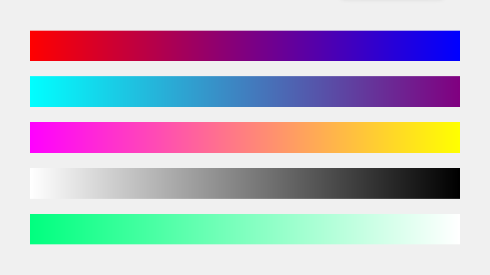
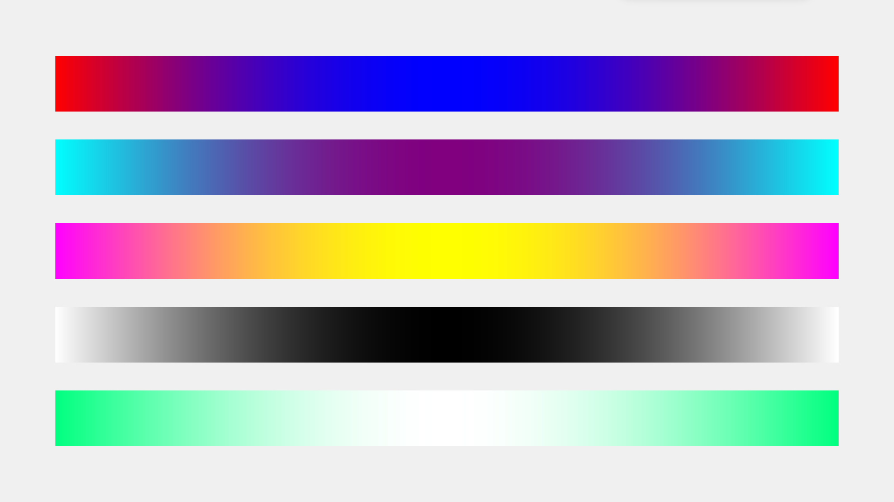

§6.1 颜色效果¶
一、自定义控件的颜色¶
1.1 颜色字符串¶
我们一般用颜色字符串来表示一个颜色，格式有两种。
其一，就是简单粗暴的颜色英文名称，如 "red"、"green" 和 "blue" 等，但并不是所有的颜色都可以被识别，主要是指 CSS 中所用的颜色字符串。这种方式比较简单明了，可以很清楚这种颜色的效果，但是并不够精细，如果想要精确地展示某一颜色，必须要用到 RGB 颜色码。
RGB 颜色码就是第二种格式。R 表示 Red，意为红色程度，G 表示 Green，意为绿色程度，B 表示 Blue，意为蓝色程度。它们的程度都用 16 进制的数字来表示，位数一般为 1~4 皆可，常用的是 1 位和 2 位的。比如 "#FFF" 表示 1 位的，"#000000" 表示 2 位的。这些颜色字符串前面都加了一个符号 “#” 来表示它是一个 RGB 格式的颜色码。关于颜色程度，0 为最小，F 为最大，0~F 依次增大。
扩展：为什么用红绿蓝表示颜色？
这是因为电子屏幕基本上都是用红色、绿色和蓝色来显示颜色的，当他们的占比不同，显示的颜色就不同。不信你可以拿放大镜仔细看电子屏幕，你会发现它们实际都是红色、绿色和蓝色，并没有其他的颜色。
1.2 透明¶
由于 tkintertools 所使用最主要的容器控件是 Canvas，而 Canvas 的颜色机制与其他控件略有不同。要说具体区别，那就是如果颜色为空，则在 Canvas 中表现为不绘制对应的颜色块（体现为完全透明），而不是报错。
透明对应到颜色字符串上，就是一个空字符串 —— ""（注意：不是空格字符串，是空字符串）。
1.3 自定义控件的颜色¶
在讲解给控件自定义颜色之前，我们有必要知道，一个控件的一般组成。一个控件，一般由三个部分组成：外框、内块和文本。当然，这是一般的控件，更加复杂的控件或者非常简单的控件可能并不是这个样子。
tkintertools 的控件一般在实例化的时候会给定几个颜色参数，一般分别是：
color_fill: 内块的颜色元组color_outline: 外框的颜色元组color_text: 文本的颜色元组
有部分控件可能并没有完整的上述三个参数，比如 Switch 就没有 color_text，因为它根本就没有文本部分。
我们可以注意到，上述参数的值都是颜色元组，并非颜色字符串，实际上，这里的颜色元组属于 tkintertools 制定的一种格式，一般是这样的：
- 控件正常时的颜色: 一般情况下的颜色
- 控件被触碰时的颜色: 鼠标悬停于控件上时的颜色
- 控件交互时的颜色: 控件被点击等事件被触发时的颜色
- 控件被禁用时的颜色: 控件被禁用后显示的颜色
只能多，不能少，不然在调用相关的方法时会报错导致对应功能无法执行（但不会引起整个程序崩溃）。当然也并不一定是元组，只要是一个对应格式的序列即可，比如列表等。
现在你应该知道 §1.2 认识 tkintertools 中第 1 张和第 2 张图中大部分控件是怎么做出来的吧？源代码在图片下面，去看看吧！
二、创建颜色丰富的控件或画面¶
tkintertools 的颜色处理是完全交给函数 color 的。tkintertools.color 非常强大，能快速获得大量渐变色、对比色等。
2.1 获取对比色¶
我们通过 color 函数获取一个颜色的对比色。下面是一个简单示例：
当 tkintertools.color 只有一个参数的时候，将返回该参数的对比色。
2.2 获取渐变色¶
实际获取渐变色并非 tkintertools.color 的主要功能，函数 color 有几个参数，可见 函数 color 的文档。不难知道，color 的主要功能是得到一个颜色字符串按比例到目标颜色字符串的结果。当这个比例为 1 的时候，返回值就是目标颜色字符串，而目标颜色字符串的默认值是对比色，默认比例也是 1，因此当没有其他参数的时候，返回值就是对比色（见上面 2.1 获取对比色）。
当这个比例是慢慢变化的，我们就可以得到渐变色的效果了。当然，我们不应该通过循环来获取每一个比例的颜色，毕竟颜色字符串转换成 RGB 颜色码是需要花费一定时间的，如果直接手动循环得到渐变色，那么将十分消耗性能，我们应该通过参数 seqlength 来得到一系列渐变色。下面是一个简单的示例：
import tkintertools as tkt
root = tkt.Tk("渐变色", 1600, 900)
canvas = tkt.Canvas(root, 1600, 900, 0, 0)
color_tup_lst = [
("red", "blue"),
("#00FFFF", "purple"),
("#FF00FF", "#FFFF00"),
("white", "black"),
("springgreen", "#FFF")
]
for i, color_tup in enumerate(color_tup_lst):
for j, c in enumerate(tkt.color(color_tup, seqlength=1400)):
x = j + 100
y = i*150 + 100
canvas.create_line(x, y, x, y + 100, fill=c, width=2)
root.mainloop()
下面是实现的效果图：

2.3 自定义渐变规则¶
上面的这一系列颜色之间的 RGB 码是等差的，我们也可以设置非等差的，来得到一些不同的效果（比如让它们的渐变规则为正弦函数）。
下面我们通过设置 color 函数的参数 controller，来实现自定义的渐变规则，此处以正弦函数的区间 [0, π] 为例。参数 controller 是一个元组（列表也行），其格式如下：
警告
控制器参数不是任意函数都可以的！函数在指定区间内的区域内必须为非负值，否则在计算过程中会得到负数的 RGB 码，这是不正确的。
import math
import tkintertools as tkt
root = tkt.Tk("自定义的渐变色", 1600, 900)
canvas = tkt.Canvas(root, 1600, 900, 0, 0)
color_tup_lst = [
("red", "blue"),
("#00FFFF", "purple"),
("#FF00FF", "#FFFF00"),
("white", "black"),
("springgreen", "#FFF")
]
for i, color_tup in enumerate(color_tup_lst):
color_lst = tkt.color(color_tup, seqlength=1400, controller=(lambda x: abs(math.sin(x)), 0, math.pi))
for j, c in enumerate(color_lst):
x = j + 100
y = i*150 + 100
canvas.create_line(x, y, x, y + 100, fill=c, width=2)
root.mainloop()
下面是实现的效果图：

和之前的那一张图相比，你发现了什么不同吗？实际上，第一张图也是有控制函数的，只不过它的函数为单位正比例函数 y = x 区间 [0, 1] 部分。